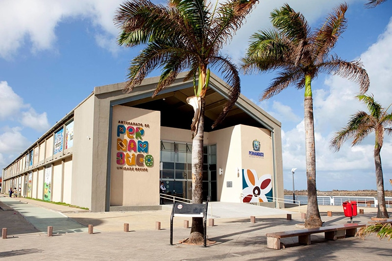

Centro de Artesanato de Pernambuco

Inaugurado em 2012, conta com um amplo espaço instalado no antigo armazém 11, com exposição e venda de peças artesanais produzidas por artesãos pernambucanos.o Centro de Artesanato de Pernambuco tem como foco a arte popular e o artesanato tradicional. Ele fica no antigo Armazém 11, além de poder adquirir várias peças de grandes artesãos e artistas reconhecidos de todo o estado, há galeria para exposição, auditório e espaço gastronômico com uma vista para o rio Capibaribe.
O centro de artesanato abre de segunda à sábado (9:00-19:00) e no domingo (10:00-16:00).
Visite o site oficial para consultar os horários de atendimento atualizados.